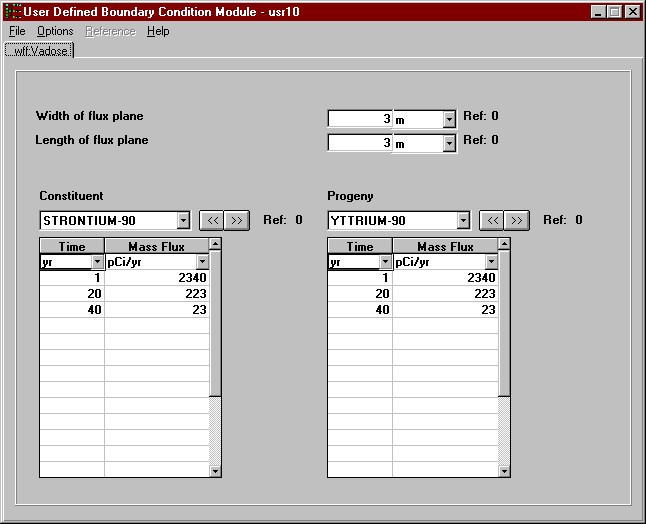

Use this module only if you know the constituent fluxes. The constituent fluxes at user provided points in time are entered directly through the interface. This module does not compute the ingrowth of progeny because the user is assumed to know everything about the source, including progeny concentrations. Therefore, this module assumes that the progeny emissions will be input along with the parent fluxes.
The fluxes ares a spatial average through a rectangular plane segment that is the interface between one layer and the next. These flux values are the instantaneous values at that time not an average. There are NO limits on number of constituents, progeny, time/flux pairs. The fluxes are in pCi/yr or g/yr depending on whether the constituent is a radionuclide or chemical. These flux values are the instantaneous values at that time not an average. There are NO limits on number of constituents, progeny, fluxes, or layers.
For more information about the file specification that this module produces see WFF Specifications on the FRAMES web site.
WFF Boundary Condition Parameters
Width of flux plane
Units: meters (m)
Range: Greater than 0.
Enter the width of the region through which constituent is released from the source. For releases to either a vadose zone or an aquifer, width is measured perpendicular to the ground water flow direction in the aquifer. For releases to surface water, width is measured parallel to the shoreline.
Length of flux plane
Units: meters (m)
Range: Greater than 0.
If the flux plane is horizontal, which is the case for all releases to a vadose zone and releases from the vadose and surface water source types to an aquifer, enter the length of the flux plane. Length is measured parallel to the ground water flow direction (i.e., perpendicular to the width dimension). If the flux plane is vertical, as is the case for all releases to surface water and the aquifer source type releasing to an aquifer, enter the height of the flux plane (i.e., the vertical length or dimension of the flux plane).
Distance to source below water table
Units: meters (m)
Range: Greater than or equal to 0.
This variable applies to all vertical flux planes (i.e., all releases to surface water and the aquifer source type releasing to an aquifer). It is the distance from the top of the water surface (for releases to surface water) or the water table (for aquifer the aquifer source type releasing to an aquifer) to the top of the vertical flux plane. For most vertical flux planes, this parameter is usually equal to zero. For all other cases (i.e., for horizontal flux planes), just set this parameter to zero.
Constituent
The list of constituents is identified by a 'Constituent' database module. Each of the constituents selected for analysis in the 'Constituent' module appears in this drop-down box. Use the drop down-box or the « » buttons to make differeent constituent selections. As a new selection is made the spreadsheet closest to the drop-down box is updated with the appropriate time series. If the selected constituent has progeny and if the "Include Progeny" option is checked under the "Options" menu, then an identical set of controls will appear to the left of the parent. The progeny will be displayed as the parent is displayed but only those progeny that relate to the displayed parent are available for data entry.
Since this is a water/chemical flux module, water flux will filled out in same manner as for a chemical. The mass fluxes are entered as a series of time/flux pairs. Each flux value is an instantaneous flux at the associated time, and linear interpolation between specific time/flux points is assumed. For instance, to enter a steady-state release of 100 g/yr for 10 years, the time/flux pairs would be:
Time (yr) Flux (g/yr)
0.0 100.0
10.0 100.0
The following example shows a release for 20 years with a peak release at year 5:
Time (yr) Flux (g/yr)
0.0 10.0
2.5 100.0
5.0 3,000.0
7.5 500.0
10.0 250.0
If no records (from site documents or historical records of constituent releases) are available, the mass flux may be estimated in several ways. Outlined below are examples of calculations that can provide an initial estimate of the flux rates from the site. Note that only calibration will provide an accurate flux rate as it is distributed in time.
1. Known discharge:
Mass Flux = (Known Quantity of Constituent)/(Time of Release)
2. Wet disposal (e.g., leaking drums, sludge):
a. Based on known or computed concentration in sludge. This value is usually expressed as mass of constituent per mass of soil (i.e., CTP). The flux is then computed as
Mass Flux = (CTP)(Total Weight of Disposed Sludge)/(Time of Deposition)
where CTP is the average concentration in mass of constituent/mass of disposed sludge.
b.If the concentration in the sludge is expressed as mass of constituent per unit volume (i.e., CT), then the flux is computed as
Mass Flux = (CT)(Total Volume of Sludge)/(Time of Deposition)
where CT is the average concentration in mass of constituent/volume of sludge.
c. Based on known or computed concentration in drums. If the concentration is expressed as mass of constituent per unit volume, then the flux is estimated as
Mass Flux = (CT)(Volume from Drums)/(Duration of Leakage)
d. Based on the estimated inventory of the constituent. The flux is calculated as
Mass Flux = (Inventory)/(Time of Disposal)
Time
Units: yr (years)
Range: Greater than or equal to 0.
A minimum of two times must be entered. Times must be entered in chronological, ascending order (i.e., 0, 5, 10 not 0, 10, 5). The spreadsheet rows must be used consecutively. Anything below a skipped time row will be deleted. A point in time at which a measurement/estimate is given should be relative to all other times entered in the interface and the overall simulation.
Mass Flux
Mass Flux Units: g/yr (grams per year) or pCi/yr (picocuries per year)
Range: Greater than or equal to 0.
Enter the constituent mass fluxes over time in this coloumn when it appears. Items left blank in rows that have a valid time defined are filled with zeros. All rows after and including the first row with an invalid time are ignored and cleared.
Flux Rate
Mass Flux Units: m^3/yr (meters cubed per year)
Range: Greater than or equal to 0.
Enter the water fluxe rates over time in this column when it appears. Items left blank in rows that have a valid time defined are filled with zeros. All rows after and including the first row with an invalid time are ignored and cleared.

Fig: Constituent